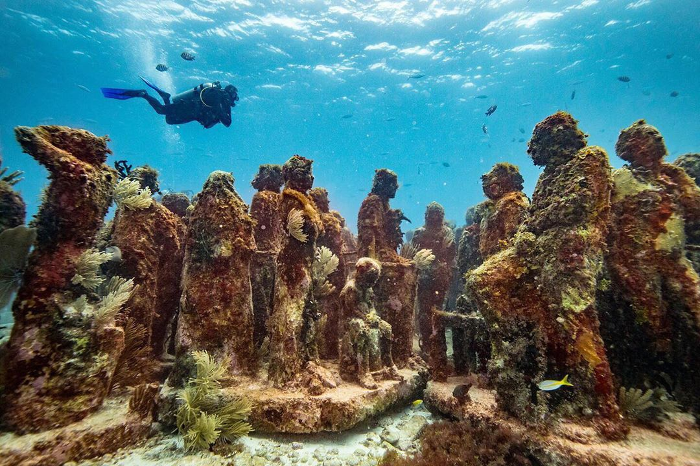

Пам'ятки
-
Ця ланцюг каньйонів більше і глибше Великого каньйону в сусідніх Сполучених Штатах, незважаючи на те, що Гранд-Каньйон в цілому більше, ніж будь-який з Мідних каньйонів окремо. Хоча це і могло б бути національним парком Мексики, у каньйонів до теперішнього часу немає такого офіційного статусу, оскільки цьому перешкоджають розбіжності між лісорубами та місцевими жителями Рарамури. Це одне з найвіддаленіших місць в Мексиці з-за свого розташування в гірській ланцюга Тарахумара. Звідси відкривається неймовірний краєвид.
-
Чичен-Іца - стародавній центр цивілізацій майя та тольтеків внесений до списку об'єктів Всесвітньої спадщини ЮНЕСКО, а перлина комплексу - піраміда Кукулькана визнана одним з Нових семи чудес світу. Піраміда унікальна за своєю конструкцією: її боку орієнтовані на чотири сторони світу. Дев'ять рівнів кожного боку, розділені сходами надвоє, утворюють вісімнадцять місяців календарного року майя, число ж сходів в сумі дає 365 - кількість днів у році. Крім того, піраміда зведена таким чином, що два рази в рік - в дні осіннього і весняного рівнодення - сонячні промені, проходячи по щаблях будови, за рахунок особливої архітектурної хитрості створюють гру світла і тіні.
-
Велике портове місто Мексики і один з найпопулярніших курортів на тихоокеанському узбережжі. Перший потік туристів хлинув в Акапулько в 30-і роки, коли місто стало улюбленим місцем відпочинку голлівудських зірок і американський багатіїв. У різний час сюди любили приїжджати Елізабет Тейлор, Хуліо Іглесіас, Пласідо Домінго і Френк Сінатра. Слідом за «зоряними» туристами, на курорт прийшли і серйозні інвестиції. Тепер Акапулько - це фешенебельний курорт з кілометрами білосніжних обладнаних пляжів, сотнями готелів і величезною кількістю нічних клубів, завдяки яким місто ще називають нічний столицею Мексики.
-

«Місто-привид» Теотіуакан (Teotihuacan) розташований в 40 км на північний схід від Мехіко в муніципалітеті Сан-Хуан-Теотіуакан. Теотіуакан являє собою стародавнє поселення, вік якого налічує вже близько двох тисяч років, а в перекладі з ацтекського мови дослівно перекладається як «місце, де Боги торкаються землі». Сучасний Теотіуакан - величезний археологічний комплекс, найвідомішими будівлями якого вважаються Піраміда Сонця і Піраміда Місяця.
-
Еко-археологічний парк Шкарет (Xcaret Park) - один з популярних розважальних атракціонів Рив'єри-Майя. Все тут крутиться навколо майянской культури - можна походити по руїнах стародавнього поселення, подивитися шоу культури майя і взяти участь в національній грі в м'яч. Однак, не одними лише майя жива місцева «екскурсійна» - в Шкарет пропонується помилуватися природою, зробивши вояж по Райського річці, відвідати оленячу резервацію і заповідник ягуарів, скуштувати страви національної кухні, поплавати з дельфінами і зануритися в різноманітні водні задоволення природного затоки Карибського моря. Всього на території парку дітей і дорослих чекають сорок атракціонів - пізнавальних, культурних і просто розважальних.
-
Доводиться визнати, що незважаючи на свою істоптанность, ці сеноти на півострові Юкатан дійсно красиві, особливо для тих, хто бачить їх вперше. Але є сенс розуміти, що на Юкатані - близько 6000 сеноті, з них офіційно зареєстрованих - лише 2400, а розкручених і щодо відомих - всього кілька сотень. І те, що я покажу нижче - навіть ще більш заворожуюче, ніж ці два. Але, тим не менше, Samula і Xkeken стоять відвідування. Якщо ви - самостійний мандрівник, то раджу приїхати туди якомога раніше, групи зазвичай привозять після Чичен-Іци, а відповідно, після полудня сеноти, як правило, переповнені. Але до полудня у вас є шанс насолодитися видовищем на самоті або хоча б малолюдні.
-

Музей підводних скульптур - це не тільки мальовниче і незвичайне місце. Він виконує важливу функцію - показати складні відносини між людьми і навколишнім середовищем. Багато, здійснюючи дайвінговие занурення, хочуть узяти речі з собою з дна океану. Найчастіше такими сувенірами стають корали, в результаті їх системи сильно страждають від втручання людини. Підводний музей «МУЗА» в Канкуні повинен звернути увагу відвідувачів на крихкість системи коралових рифів і необхідність її захисту. Встановлені скульптури також стають основою для формування нових коралів і будинком для морських мешканців.
-
Печера Cueva de los Cristales, розташована в мексиканській пустелі Чіуауа (Chihuahuan), унікальна величезними прозорими кристалами, що досягають одинадцяти метрів у висоту. Схожа на лабіринт підземна порожнина була заповнена водою протягом декількох сотень тисяч років. За цей час у воді, насиченою мінеральними речовинами, сформувалися з селеніту (один з різновидів гіпсу) найбільші в світі кристали природного походження. Печера з кристалами, схожими на промені, була виявлена у 2000 році братами-шахтарями Санчес, які прокладали новий тунель для шахтного комплексу. З порожнини, розташованої на глибині в 300 метрів, поступово була відкачана вода, а в 2006 році був запущений проект, мета якого - захистити цей унікальний природний об'єкт від шкідливого впливу навколишнього середовища.
-
Канкун - курортне місто, розташоване на на східному узбережжі півострова Юкатан, Мексика, в штаті Кінтана-Роо. На півночі омивається затокою Мухерес, на сході - Карибським морем. У Канкуні переважає тропічний клімат із середньорічною температурою + 27С і середньою вологістю 80%. У травні в починається сезон дощів, однак дощі йдуть не щодня і в цілому не заважають пляжного відпочинку. З серпня по жовтень можливі урагани.